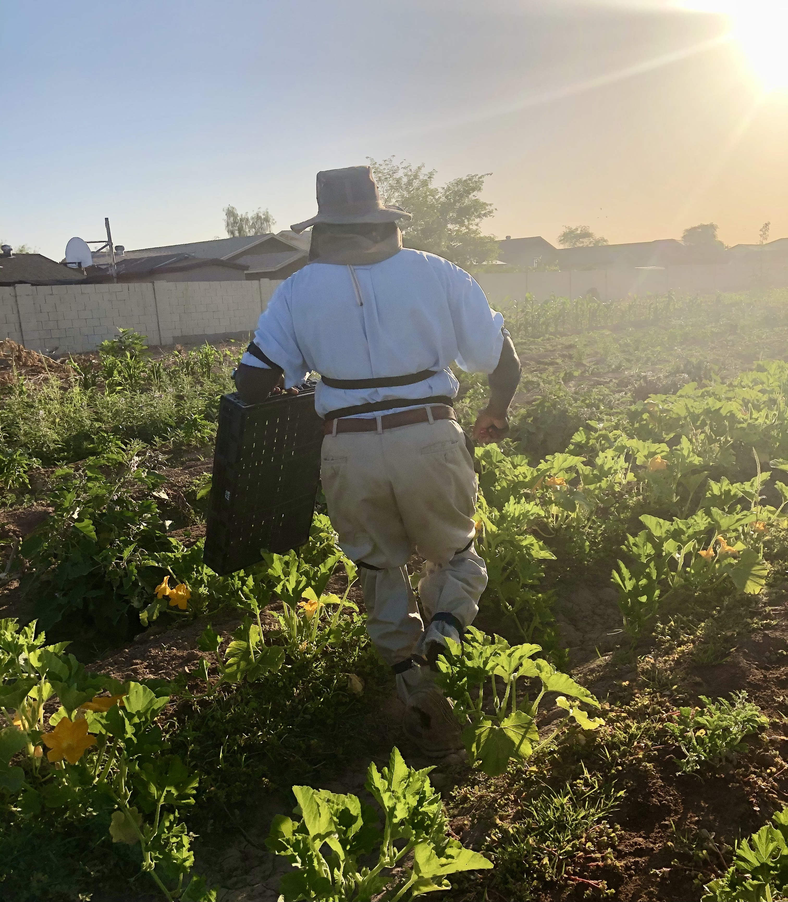
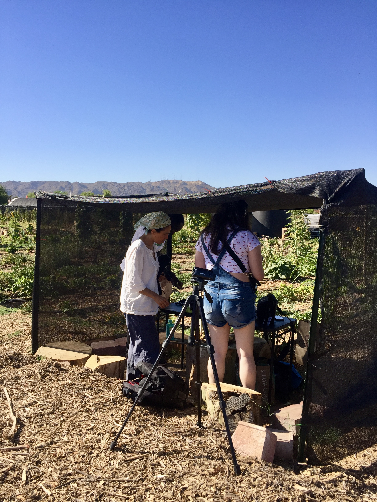

The Movement Undercommons
TECHNOLOGY AS RESISTANCE
Movement Undercommons, a movement portrait platform
OVERVIEW
The Movement Undercommons will explore as yet unimagined possibilities latent in mobile motion capture technologies to create a series of ‘movement portraits’, thereby revealing the significance of individual movement patterns as reflected through data.
What ways of life are "carried along" through expressions of the body?
DETAILS
This project proposes a situated approach for sourcing and capturing movement data juxtaposing the persons environmental, cultural, technological, economic and historical contexts in which movement is inextricably embedded.
We contemplate legacies of expulsion, displacement, migration, diaspora, and dense cultural diversity.

In that way, MU employs decolonizing data gathering methods to reposition peoples as collaborators tracing their own portraits of self and place.
By examinging our patterns of movement, we reveal and honor the dynamic, complex aspects of each one of us and can be understood as a kind of a unique movement ‘fingerprint’ that evolves over the course of a lifetime influenced by biology, learning, function — cultural, social and geographical contexts.
PHOENIX TEAM
Grisha Coleman / Principle Investigator & Artistic Director [ASU faculty]
Melissa Cliver / Design Strategist
Jiaying Brust / Creative Technologist
Zakiya Johnson / Communications & Documenation
Lavendar Sy / Audio Engineer & Editor
Tejaswi Gowda / Software Developer [ASU faculty]
Assegid Kidane / Eletrical Engineer [ASU faculty]
Shawn Lawson / Animation Artist [ASU faculty]
PARTNERS

PRESS
ASU professor awarded grant to make the invisible visible through technology
“The Movement Undercommons” project aims to shift the use of new mobile motion capture technology normally confined to Hollywood CGI and academic research laboratories, to repurpose these technologies by working with historically marginalized communities to create visual sound media narratives that emerge from movement data.
Continue readingArts, media and engineering professor awarded yearlong fellowship at Harvard Radcliffe Institute
Associate Professor Grisha Coleman of the ASU Herberger Institute’s School of Arts, Media and Engineering has been named a 2021–22 fellow by the Harvard Radcliffe Institute. The Radcliffe Institute for Advanced Study at Harvard University — known as Harvard Radcliffe Institute — is one of the world’s leading centers for interdisciplinary exploration.
Continue reading